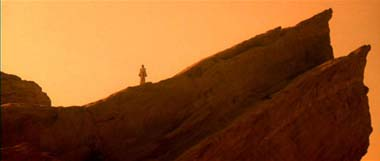
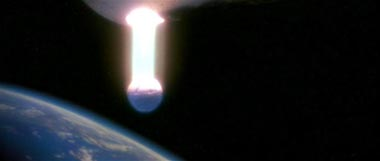
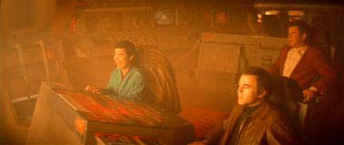
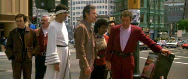
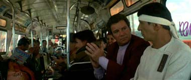
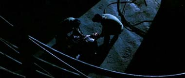
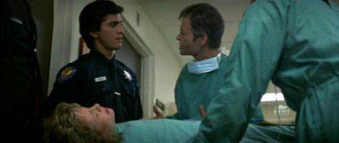
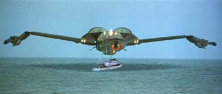
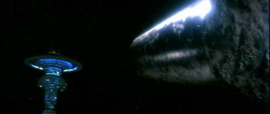
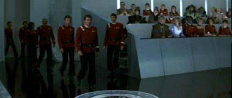

|

STAR TREK IV:
THE VOYAGE HOME
1986


Sinopse
comentada
Comentrios
Citaes
Efeitos
Especiais
Trilha Sonora
Trivia
Ficha
Tcnica
O
DVD
Meus Amigos,
Estamos
em Casa...

Aparentemente a infame "Procura por Nicholas Meyer"
(TM), mencionada pelo autor nos comentrios do filme anterior, deu
resultado e o verdadeiro responsvel pelos melhores momentos da Srie
Clssica no Cinema voltou para escrever um bom e bem resolvido
roteiro, que com uma surpreendentemente efetiva atitude do mais puro,
superficial e assumido (por vezes descarado) entretenimento consegue
restaurar o Status Quo da srie (largamente sacudido pelos dois filmes
anteriores), colocando nossos sete velhos conhecidos (incluindo Spock) de
volta na ponte de uma (nova) nave Enterprise ao seu final, fazendo tal
coisa com grande competncia e ainda alm conseguindo, durante toda esta
trajetria, apelar tanto a uma multido de no aficionados quanto
legio de fs tradicionais de Jornada. Uma tarefa deveras
impressionante sem dvida. Mais detalhes, sem precisar voltar no tempo
para resgatar um casal de baleias no processo, nas linhas abaixo.

De forma a restaurar o formato tradicional
das aventuras de Kirk e cia. os realizadores perceberam que seria necessrio
um grande esforo se estabelecido todo um arco dramtico que realmente
resolvesse os elementos ento vigentes (notadamente: a recuperao do
Spock de outrora, um julgamento para os amotinados e uma nova nave estelar
para ocupar o lugar da Enterprise) de maneira apropriada e satisfatria.
O que talvez fosse material demais para um nico filme, o que somado a noo
de que os dois ltimos filmes tivessem sido dramticos ao extremo
apontava naturalmente para uma mudana de tom. 

Salvar a Terra de mais uma ameaa valeria
a Kirk e os demais o perdo e uma nave e durante tal crise Spock entraria
em contato de novo com seu lado humano. Nenhum destes ngulos foi muito
enfatizado e o grosso do filme que fica na memria se resume ao conjunto
das situaes, no melhor estilo de um peixe fora dgua, que
enfrentam nossos conhecidos personagens em pleno ano de 1986. Parece que
como um habilidoso mgico, Meyer atrai a ateno da audincia com tal
choque cultural, enquanto resolve marginalmente (na melhor das
hipteses) os referidos elementos dramticos. uma forma de trapaa
sim, mas que funciona perfeitamente bem nos seus termos. 

Este quarto filme o mais acessvel ao pblico
em geral de toda a coleo de segmentos de Jornada para o Cinema,
no difcil perceber o por que. A produo do longa teve grandes
cuidados em "aparar as arestas" do produto final, visando
maximizar a audincia potencial do filme. Fossem tais "arestas"
inerentes: ao roteiro (que minimiza os aspectos tcnicos da histria,
colocando a maior parte da ao em um cenrio reconhecvel e por isto
mais seguro para a audincia), ao tom da fita (onde no aparecem mortes
e o lugar comum da "iminente extino da humanidade"
tratado pouco enfaticamente), a trilha sonora (que no tem nenhuma relao
com uma trilha tpica de Jornada, que basicamente era a inteno),
as atuaes dos atores (altamente naturais e despojadas aqui, parecendo
capturar os personagens em sua forma mais humana possvel), a direo
(bastante discreta), a fotografia (absurdamente superior aquela dos dois
filmes anteriores, trazendo uma maior suavidade ao filme) etc. 

No bastassem estes cuidados todos para os
no iniciados nas aventuras de Kirk e cia., ainda existe muito para o
espectador regular de Jornada no filme. O grande presente para esta
parcela do pblico o fato do filme capturar to bem a real "persona"
de cada um destes personagens que se tornaram to ntimos dos fs de Jornada
ao longo dos anos, mas talvez nunca tenham sido pintados de uma forma to
prxima ao f e em um cenrio tambm to prximo ao f. Tomem por
exemplo cena em que aps despachar os demais cinco personagens
regulares para as suas respectivas misses, Kirk diz a Spock que graas
memria recuperada do Vulcano e um pouco de sorte eles estavam na So
Francisco de 1986 procurando as baleias. A descrio que Kirk faz da
situao e a forma como ele a faz poderia ter sido facilmente feita por
qualquer f no lugar de Kirk, nisto reside o apelo da caracterizao
dos personagens no presente filme. E do esforo e competncia dos
envolvidos em manter uniforme tal proposta (para todos os personagens,
cena aps cena) ao longo do longa reside a sua maior qualidade (ou seja,
exatamente o contrrio do que foi feito no filme seguinte).
Provavelmente o grande mrito de Nimoy
enquanto diretor aqui tenha sido justamente trabalhar as atuaes dos
atores de forma a trazer em suas performances o mais fiel retrato a essncia
dos seus personagens, despidos de uma certa "capa de herosmo"
que muitas vezes nubla as suas facetas mais humanas. Os demais aspectos da
direo do alter-ego de nosso Vulcano favorito no so particularmente
dignos de nota, ainda que mostrem uma evoluo com relao absoluta
mediocridade dos seus esforos no filme anterior. Tomem por exemplo
seqncia (talvez a mais audaciosa da pelcula) que mostra a "Bounty"
salvando as duas baleias do iminente ataque do baleeiro. Em nenhum momento
tem-se sequer uma ponta de iluso que de fato tais trs famlias de
cenas (casal de baleias, barco baleeiro e interior da nave Klingon) pertenam
a um mesmo cenrio de ao ao vivo, mais parecendo um mero trabalho de
colagem. 
J Nimoy, enquanto ator, serve de alicerce
para o filme (como sempre serviu para a Srie Clssica). De fato,
apesar dos inmeros problemas de motivao e execuo do filme
anterior, em termos prticos quase impossvel imaginar a tripulao
original de Jornada sem a estatura do intrprete de Spock em suas
fileiras, o Vulcano teria mesmo que voltar a vida para que os filmes
continuassem a ser produzidos. Aqui Nimoy ancora os melhores momentos e
faz de Shatner um melhor ator quando em cena junto com ele. Ver Shatner e
Hicks (cuja personagem talvez pudesse at ser excluda da histria, em
prol de uma maior diversidade de situaes e de uma intensificao do
paradigma do Peixe fora dgua) trocando caras e bocas na
pizzaria absolutamente constrangedor, especialmente por que pouco tempo
antes vimos tal trio protagonizando a melhor cena do filme (Vocs
gostam de comida italiana?), na caminhonete da doutora, em um triunfo cmico
que qualquer descrio falharia em fazer justia. 
A Volta Para Casa" traz
curiosas opes criativas em sua concepo, especialmente quando
contrastadas com as dos dois filmes anteriores e das expectativas geradas
por estes. Evitando com humor (e jogo de cintura) algumas potenciais
armadilhas dramticas plantadas anteriormente. O filme traz um apelo
universal ao mesmo tempo em que revela a mais pura essncia da tripulao
da Srie Clssica. Um belo esforo dos envolvidos.